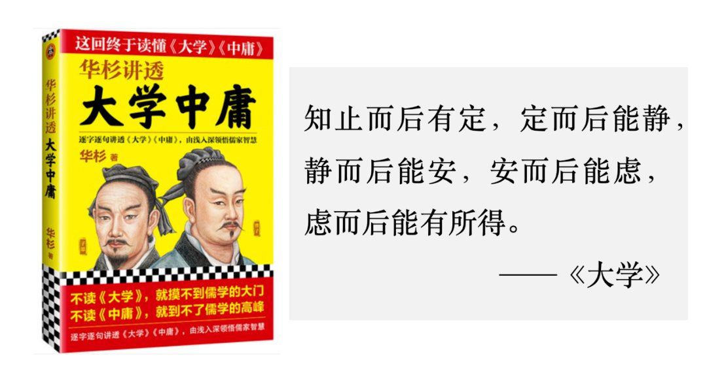
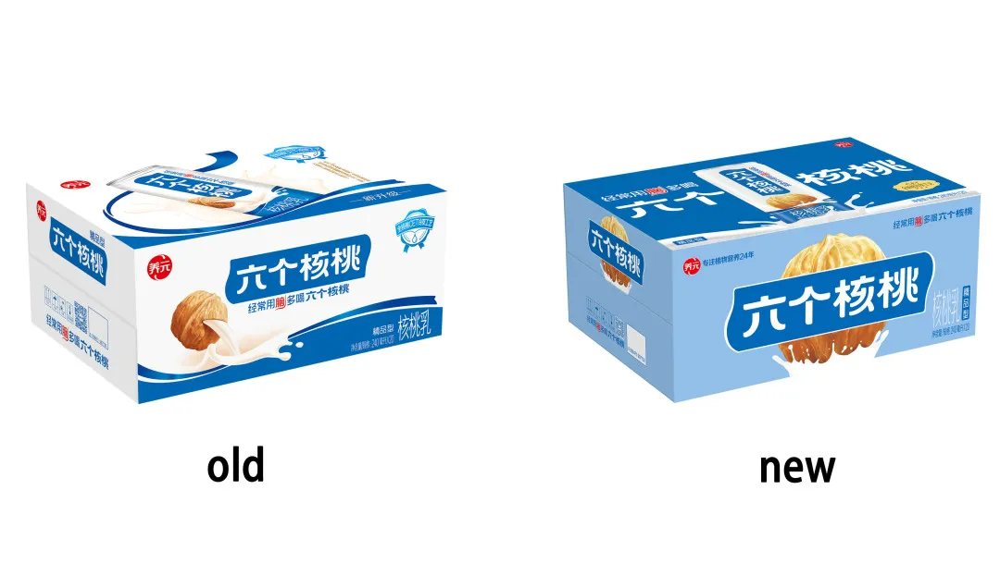
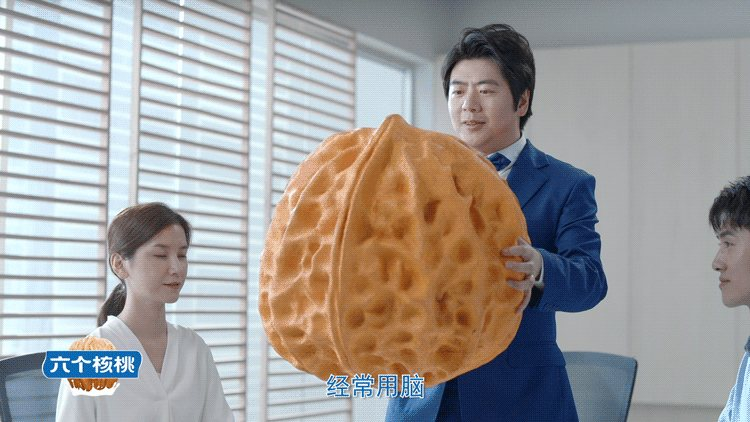
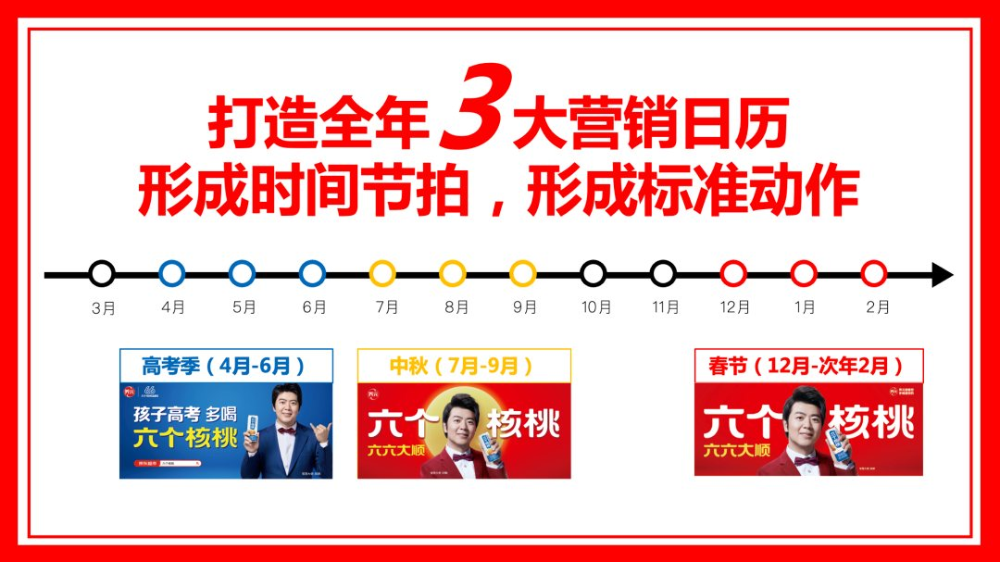

01 · 判断
品牌升级先判断什么不能丢
企业内部容易把熟悉的视觉当作陈旧，但消费者可能正依靠这些特征识别品牌。项目首先确认市场中真正产生作用的既有资产。

02 · 方法
用三现主义回到真实购买现场
到现场看陈列、拿现物比较、依据现实做判断，能够避免只在会议室里讨论视觉。包装是否醒目、信息是否清楚，都需要在货架环境中验证。

03 · 放大
品牌宣传战集中重复核心资产
确认关键资产后，项目通过集中传播、终端呈现与组织协同放大，而不是不断更换新主题。

04 · 积累
持续改善比频繁换新更有价值
每一次包装和传播优化都建立在上一轮资产之上，既提升当期效果，也降低消费者重新学习品牌的成本。
